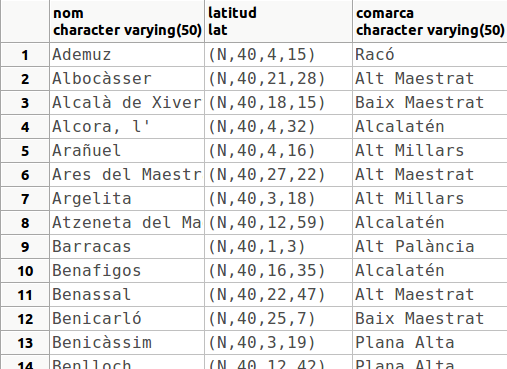

9. Creació d'altres objectes basats en funcions
Ara que ja sabem crear funcions, i ho hem practicat fins i tot per a crear triggers, podríem plantejar-nos crear altres objectes, com operadors, operadors de classe, funcions d'agregat, ..., per als quals hem d'utilitzar funcions. Així és com veurem l'extensibilitat de PostgreSQL, com és de versàtil i ens podem crear objectes a la nostra mida.
Nota
En DBeaver, no es visualitzen per defecte tots els tipus d'objectes de la Base de Dades. Per poder visulitzar-los has d'executar la consulta: SELECT * FROM pg_operator
9.1 Operadors
Per a definir un nou operador especificarem el símbol que utilitzarem, el o els operands i la funció que l'implementa.
La sintaxi és:
CREATE OPERATOR name (
PROCEDURE = funcname
[, LEFTARG = lefttype ] [, RIGHTARG = righttype ]
[, COMMUTATOR = com_op ] [, NEGATOR = neg_op ]
...
)
Hi ha més opcions, que per a la utilitat d'aquest curs obviarem.
- En el nom de l'operador posarem un o més d'un caràcters de la següent llista:
+ - * / < > = ~ ! @ # % ^ & | ` ?
Hi ha algunes limitacions, que podem veure en la documentació.
-
Sempre hem de posar la funció que implementa l'operador.
-
Si l'operador és d'un únic operand, l'haurem d'especificar (el de la dreta o de l'esquerra, el que preferim). Si és de dos operands s'hauren d'especificar els dos.
-
COMMUTATOR indica un altre operador que funciona igual canviant l'ordre dels paràmetres (en numèrics el commutador de < és >)
-
NEGATOR indica un altre operador equivalent a negar aquest (en numèrics el negador de < és > =)
Per exemple anem a crear l'operador MÀXIM(/|) que calcula el màxim entre dos números. Utilitzarem la funció MAX2 que ja tenim creada (és l'exercici 4)
CREATE OPERATOR /| (
PROCEDURE = MAX2, LEFTARG = numeric, RIGHTARG = numeric);
Podem comprovar el seu funcionament amb la sentència:
SELECT 23 /| 15;
Recordem que els operadors estan definits per a determinats operands. Així, per exemple, la següent sentència no funcionarà perquè no tenim definit l'operador per a operands de text:
SELECT 'Alfa' /| 'Beta';
Per a esborrar un operador utilitzarem la sentència DROP OPERATOR , al qual únicament li haurem d'especificar l'operador a esborrar i entre parèntesis els tipus implicats
DROP OPERATOR /| (numeric, numeric);
Tampoc tenim definits els operands de comparació per al tipus lat , que havíem creat. I per tant coses com aquesta no funcionen:
SELECT * FROM POBLACIONS3
WHERE latitud > '(N,40,0,0)';
I si li posem el tipus del qual es tracta:
SELECT * FROM POBLACIONS3
WHERE latitud > '(N,40,0,0)'::lat
ORDER BY nom;
potser no funcionen bé. Encara que sembla que va bé la cosa:

el que ha fet en realitat és una comparació caràcter a caràcter
Per a demostrar que no funciona bé inserim una ciutat que estiga a l'hemisferi sud: Rio de Janeiro (ja havíem quedat que no importava si es deteriorava la Base de Dades).
INSERT INTO POBLACIONS3
VALUES('Rio de Janeiro','(S,22,56,58)'::lat, NULL);
I si tornem a executar la sentència d'abans:
SELECT * FROM POBLACIONS3
WHERE latitud > '(N,40,0,0)'::lat
ORDER BY nom;
ara ja es veu que va malament:
Anem a intentar crear tots els operadors de comparació del tipus lat
Començarem per les funcions. No considerem quan un operand és nul, per fer-los més senzills. La d'igualtat és fàcil, ja que dos latituds són iguals si ho són tots els membres. Observeu que no hi ha problema per fer la comparació $1.h=$2.h , ja que són del domini hemi_lat basat en el tipus caràcter:
CREATE FUNCTION igual (lat,lat) RETURNS bool AS '
BEGIN
RETURN $1.h=$2.h AND $1.g=$2.g AND $1.m=$2.m AND $1.s=$2.s;
END; '
LANGUAGE plpgsql;
I ara l'operador:
CREATE OPERATOR =
(LEFTARG = lat,
RIGHTARG = lat,
PROCEDURE = igual,
COMMUTATOR = = ,
NEGATOR = <>);
Observeu que hem posat el commutador igual a ell mateix i el negador a l'operador distint, encara que no el tenim definit.
Ara aquesta instrucció ja funciona:
SELECT * FROM POBLACIONS3
WHERE latitud = '(N,39,59,10)';
i fins i tot sap que ha de convertir a lat la cadena de caràcters (ja que només té un operador = amb un operand tipus lat).
La funció distint només ha de negar l'igual. I ja podem gastar l'operador:
CREATE FUNCTION distint (lat,lat) RETURNS bool AS '
BEGIN
RETURN NOT ($1 = $2);
END; '
LANGUAGE plpgsql;
CREATE OPERATOR <>
(LEFTARG = lat,
RIGHTARG = lat,
PROCEDURE = distint,
COMMUTATOR = <> ,
NEGATOR = = );
"Nota important"
Enguany tenim creades moltes Bases de Dades perquè l'alumnat és molt extens, i potser tenim un poc saturat el servidor.
Siga per l'anterior o per alguna altra causa, estem detectant una sobrecàrrega entre les crides als operadors nous que estem creant.
Per aquesta raó, encara que queda molt clara la funció distint (quan no són iguals), en compte d'utilitzar l'operador = serà millor cridar a la funció igual (en definitiva, l'operador = crida a la funció igual, per tant ens estalviem un pas). Com que anirem fent tots els operadors de comparació, si cridem sempre a les funcions i no a altres operadors, al final ens estalviarem molts passos.
Per això, millor fer aquesta versió de la funció distint(lat,lat)
CREATE OR REPLACE FUNCTION distint(lat, lat) RETURNS bool AS $cos$
BEGIN
RETURN NOT igual($1,$2);
END;
$cos$ LANGUAGE plpgsql;
L'operador major és un poc més complicat. Hem de considerar una latitud major si està més al nord. Per tant a l'hemisferi nord quan més graus més al nord, però a l'hemisferi sud és al revés.
CREATE FUNCTION major (lat1 lat, lat2 lat) RETURNS bool AS $cos$
DECLARE
aux bool;
BEGIN
IF lat1.h='N' AND lat2.h='S' THEN aux := TRUE;
ELSIF lat1.h='S' AND lat2.h='N' THEN aux := FALSE;
ELSIF lat1.h='N' AND lat2.h='N' THEN -- Hemisferi NORD
IF lat1.g > lat2.g THEN aux := TRUE;
ELSIF lat1.g < lat2.g THEN aux := FALSE;
ELSE
IF lat1.m > lat2.m THEN aux := TRUE;
ELSIF lat1.m < lat2.m THEN aux := FALSE;
ELSE
IF lat1.s > lat2.s THEN aux := TRUE;
ELSE aux := FALSE; -- si són iguals és fals
END IF;
END IF;
END IF;
ELSE -- Hemisferi SUD, al revés que al NORD
IF lat1.g < lat2.g THEN aux := TRUE;
ELSIF lat1.g > lat2.g THEN aux := FALSE;
ELSE
IF lat1.m < lat2.m THEN aux := TRUE;
ELSIF lat1.m > lat2.m THEN aux := FALSE;
ELSE
IF lat1.s < lat2.s THEN aux := TRUE;
ELSE aux := FALSE;
END IF;
END IF;
END IF;
END IF;
RETURN aux;
END; $cos$
LANGUAGE plpgsql;
Segurament podria haver quedat més curt, però així crec que s'entén molt bé. Ara l'operador:
CREATE OPERATOR >
(LEFTARG = lat,
RIGHTARG = lat,
PROCEDURE = major,
COMMUTATOR = < ,
NEGATOR = <= );
Podríem provar-lo així:
SELECT * FROM POBLACIONS3
WHERE latitud > '(N,40,0,0)'
ORDER BY NOM;
i podrem comprovar que Rio de Janeiro no apareixerà.
Afortunadament tots els altres operadors es poden derivar dels que ja tenim:
CREATE OR REPLACE FUNCTION major_igual (lat,lat) RETURNS bool AS '
BEGIN
RETURN ($1 > $2) OR ($1=$2);
END; ' LANGUAGE plpgsql;
CREATE OPERATOR >=
(LEFTARG = lat,
RIGHTARG = lat,
PROCEDURE = major_igual,
COMMUTATOR = <= ,
NEGATOR = < );
I el menor seria negant el major o igual i el menor o igual negant el major.
"Nota important"
Per la mateixa raó de la nota anterior, millor fer aquesta versió de la funció major_igual(lat,lat) :
CREATE OR REPLACE FUNCTION major_igual (lat,lat) RETURNS bool AS '
BEGIN
RETURN major($1,$2) OR igual($1,$2);
END; ' LANGUAGE plpgsql;
I exactament igual amb les funcions menor(lat,lat) i menor_igual(lat,lat)
 Exercicis
Exercicis
En la Base de Dades geo_grup_9999x :
Ex_16 - Crear els dos operadors de comparació que quedaven per al tipus lat : < *i *< =. Primer haureu de crear les 2 funcions que queden: menor(lat,lat) i menor_igual(lat,lat)
9.2 Operadors de classe
Hem fet els operadors de comparació per a un nou tipus de dades que hem creat, però a pesar d'això, no podem ordenar per un camp d'aquest tipus, és a dir, consultes com la següent encara no funcionen:
SELECT *
FROM POBLACIONS3
ORDER BY latitud DESC;
observeu com la primera és Rio de Janeiro, quan havia de ser l'última.

Ens falta un pas més, construir un OPERADOR DE CLASSE (OPERATOR CLASS), que permetrà indexar per un camp d'aquest tipus. Això suposarà que podrem ordenar de forma ascendent o descendent, i que podrem crear índex formats per camps d'aquest tipus; fins i tot podrà ser, a partir d'aquest moment, clau principal.
Una vegada tenim tots els operadors de comparació, només ens resta crear una funció de suport a l'operador i definir pròpiament l'operador de classe.
Nota
Abans de continuar, estigueu segurs que teniu tots els operadors creats, incloent < i < =
La funció de suport ha de tenir dos paràmetres del tipus que volem, i tornar -1, 1 o 0, depenent de si el primer operand és menor, major o igual que el segon, respectivament.
CREATE OR REPLACE FUNCTION lat_cmp(lat1 lat,lat2 lat) RETURNS integer AS $cos$
BEGIN
IF lat1 < lat2 THEN return -1;
ELSEIF lat1 > lat2 THEN return 1;
ELSE return 0;
END IF;
END;
$cos$ LANGUAGE 'plpgsql';
Ara ja podem definir l'operador de classe. Haurem de tenir privilegis d'administració (per evitar que qualsevol usuari puga crear operadors de classe). Haurem d'especificar:
-
El tipus de dades per a qui definim l'operador de classe.
-
El mètode d'indexació que utilitzarem (normalment btree , b-arbre)
-
L'estratègia d'ordenació, especificant quins són els nostres operadors i associant-los a números.
-
També haurem d'especificar la funció de suport.
Lamentablement no teniu privilegis d'administració, per tant aquesta part no la podreu fer, únicament us podreu fiar. La definició de l'operador de classe quedarà així :
CREATE OPERATOR CLASS lat_op_cl DEFAULT
FOR TYPE lat USING btree AS
OPERATOR 1 <,
OPERATOR 2 <=,
OPERATOR 3 =,
OPERATOR 4 >=,
OPERATOR 5 >,
FUNCTION 1 lat_cmp(lat, lat);
Si esteu molt molt interessats i voleu comprovar-lo, m'ho dieu a mi i us crearé aquest operador de classe.
Ara ja ens funcionaria la següent sentència:
SELECT *
FROM POBLACIONS3
ORDER BY latitud DESC;
observeu com estem ordenant de forma ascendent, i la primera és Rio de Janeiro:

I fins i tot, si fóra el cas, podríem definir el camp latitud com a clau principal, que no és el cas perquè ja és nom.
9.3 Funcions d'agregat
En PostgreSQL també podem definir funcions d'agregat, de l'estil de MAX , SUM , AVG , ... Podem fer-ho sobre qualsevol tipus, existent o definit per l'usuari
Una funció d'agregat vindrà definida pel seu nom i pel tipus de dades. Per això encara no funciona la sentència
SELECT MAX(latitud)
FROM POBLACIONS3;
ja que MAX no està definida sobre el tipus de dades nou.
A banda del tipus de dades, podrem jugar amb un tipus de dades intern, mentre es calcula la funció d'agregat, que no té per què ser igual al tipus de dades de la funció. I la funció d'agregat vindrà definida per una o dues funcions: una funció de transició d'estat (sfunc) que anirà calculant l'estat intern mentre van arribant nous valors; i opcionalment una altra funció final (ffunc) per a fer un últim càlcul i donar el valor final (per exemple en la mitjana sfunc anirà calculant la suma dels valors, i ffunc haurà de dividir pel nombre total d'elements).
sfunc( estat-intern, següent-item-dades ) ---> següent-estat-intern
ffunc( estat-intern ) ---> valor-final
Opcionalment també podrem donar un valor inicial. La sintaxi és:
CREATE AGGREGATE nom (
BASETYPE = tipus_dades,
SFUNC = sfunc,
STYPE = tipus_dades_intern
[ , FINALFUNC = ffunc ]
[ , INITCOND = condició_inicial ]
[ , SORTOP = operador_ordenació ]
)
Anem a crear la funció d'agregat MAX per al tipus de dades lat. Comencem per la funció d'estat, que en aquest cas senzillament anirà agafant el màxim. És, per tant, com la funció que calcula el màxim de dos números, però en lat. No tindrem en consideració els valors nuls, per no complicar la cosa.
CREATE OR REPLACE FUNCTION MAX2(lat1 lat,lat2 lat) RETURNS lat AS $cos$
BEGIN
IF lat2 > lat1 THEN RETURN lat2;
ELSE RETURN lat1;
END IF;
END; $cos$
LANGUAGE plpgsql;
Ara ja va la funció d'agregat:
CREATE AGGREGATE MAX (
BASETYPE = lat,
SFUNC = MAX2,
STYPE = lat,
INITCOND = '(S,90,0,0)');
Hem posat com a valor inicial el pol sud, per evitar el problema dels nuls. Si tot ha anat bé, ja podrem fer consultes com la del principi d'aquesta pregunta.
SELECT MAX(latitud)
FROM POBLACIONS3;
Si havíem creat també l'operador de classe, les podrem complicar ordenant-les. Per exemple, podem traure la latitud màxima de cada comarca, ordenades de nord a sud:
SELECT comarca,MAX(latitud)
FROM POBLACIONS3
GROUP BY comarca
ORDER BY MAX(latitud) DESC;
Com sempre, la sentència d'esborrar és més senzilla. Per a esborrar una funció d'agregat, hem d'especificar el nom de la funció d'agregat i entre parèntesis el tipus implicat:
DROP AGGREGATE MAX (lat);
Exercicis
En la Base de Dades geo_grup_9999x :
Ex_17 - Crear la funció d'agregat MIN per al tipus de dades lat.
Llicenciat sota la Llicència Creative Commons Reconeixement NoComercial CompartirIgual 3.0